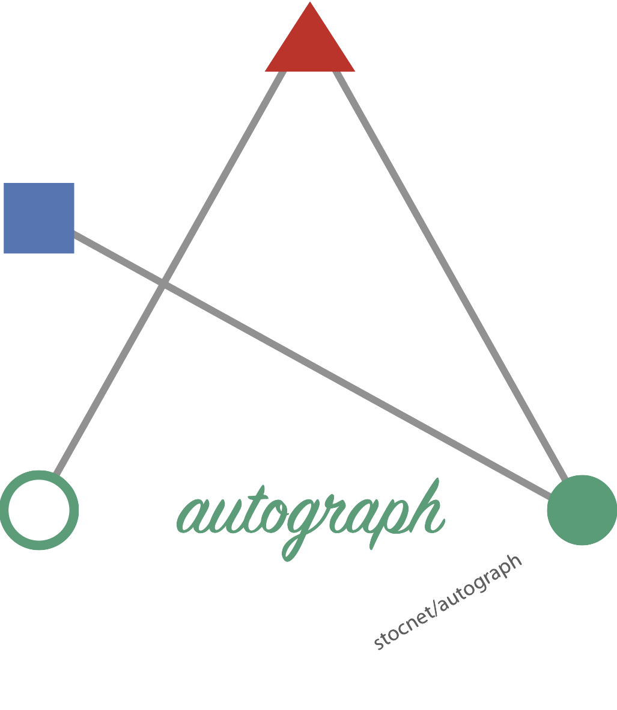
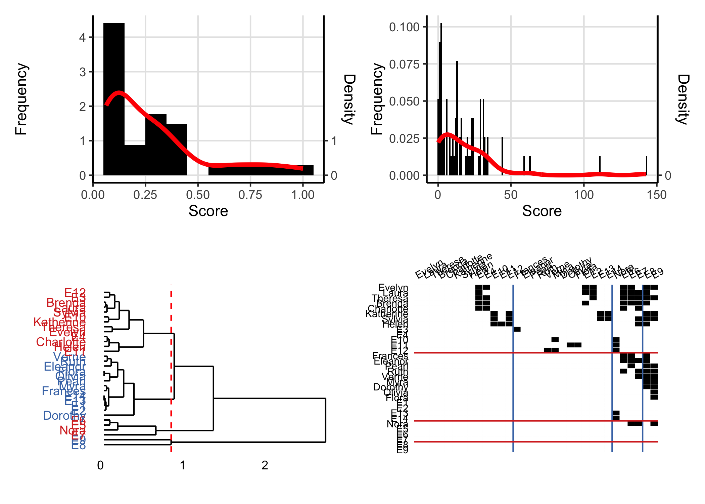
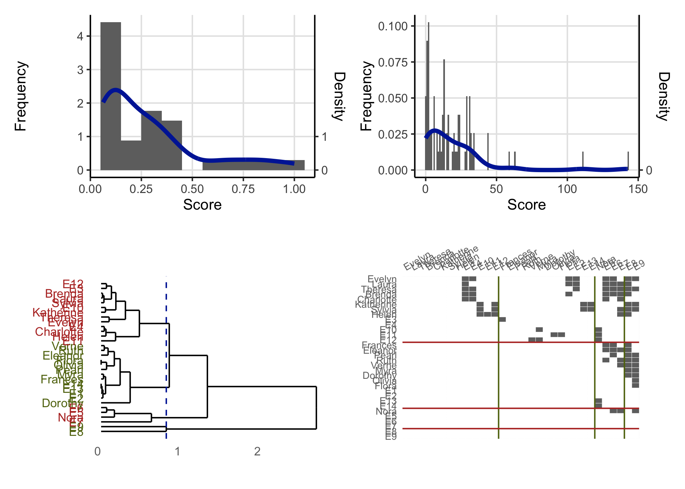

About the package
This package aims to make exploration, analysis, and publication of results from any of the stocnet packages easier, faster, and more consistent. It does this by letting you simply set a theme, say for your institution, and then those palettes will be used whenever you use plot() or graphr() on an object created in one of the relevant packages.
Setting a theme
It is very easy to set a theme. Just type stocnet_theme() to see which is the theme currently set, and to get a list of available themes. Then enter the chosen theme name in
library(autograph)
library(patchwork)
stocnet_theme()
#> ℹ Theme is set to default.
#> ℹ The following themes are available: default, bw, iheid, ethz, uzh, rug, unibe, crisp, neon, and rainbow.
(plot(node_degree(ison_karateka)) +
plot(tie_betweenness(ison_karateka)))/
(plot(node_in_regular(ison_southern_women, "e")) +
plot(as_matrix(ison_southern_women),
membership = node_in_regular(ison_southern_women, "e")))
stocnet_theme("ethz")
#> ✔ Theme set to ethz.
(plot(node_degree(ison_karateka)) +
plot(tie_betweenness(ison_karateka)))/
(plot(node_in_regular(ison_southern_women, "e")) +
plot(as_matrix(ison_southern_women),
membership = node_in_regular(ison_southern_women, "e")))
Installation
Stable
The easiest way to install the latest stable version of autograph is via CRAN. Simply open the R console and enter:
install.packages('autograph')
library(autograph) will then load the package and make the data and tutorials (see below) contained within the package available.
Development
For the latest development version, for slightly earlier access to new features or for testing, you may wish to download and install the binaries from Github or install from source locally. The latest binary releases for all major OSes – Windows, Mac, and Linux – can be found here. Download the appropriate binary for your operating system, and install using an adapted version of the following commands:
- For Windows:
install.packages("~/Downloads/autograph_winOS.zip", repos = NULL) - For Mac:
install.packages("~/Downloads/autograph_macOS.tgz", repos = NULL) - For Unix:
install.packages("~/Downloads/autograph_linuxOS.tar.gz", repos = NULL)
To install from source the latest main version of autograph from Github, please install the remotes package from CRAN and then:
- For latest stable version:
remotes::install_github("stocnet/autograph") - For latest development version:
remotes::install_github("stocnet/autograph@develop")
Funding details
Development on this package has been funded by the Swiss National Science Foundation (SNSF) Grant Number 188976: “Power and Networks and the Rate of Change in Institutional Complexes” (PANARCHIC).